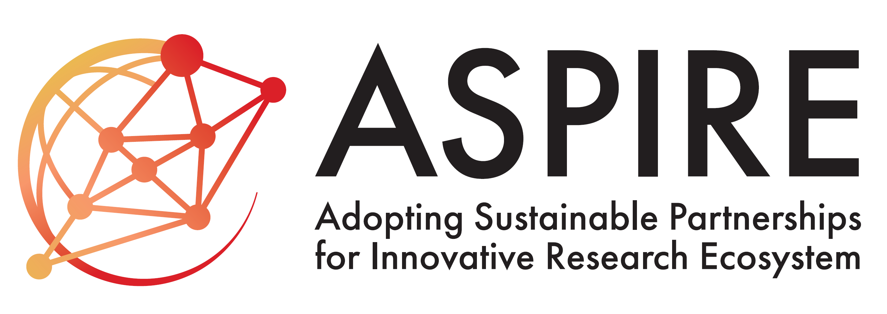
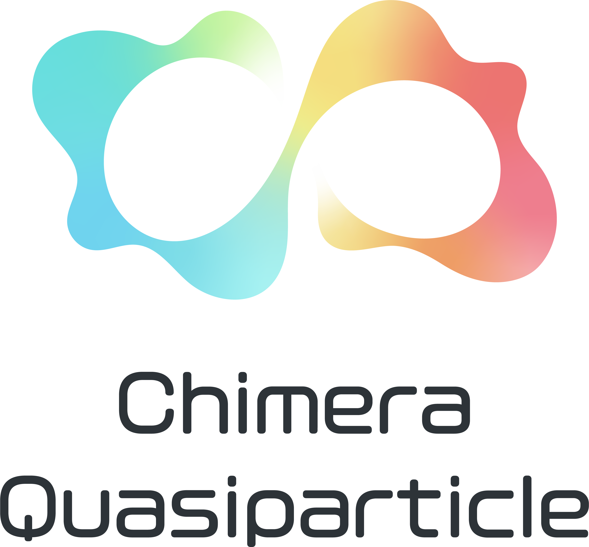
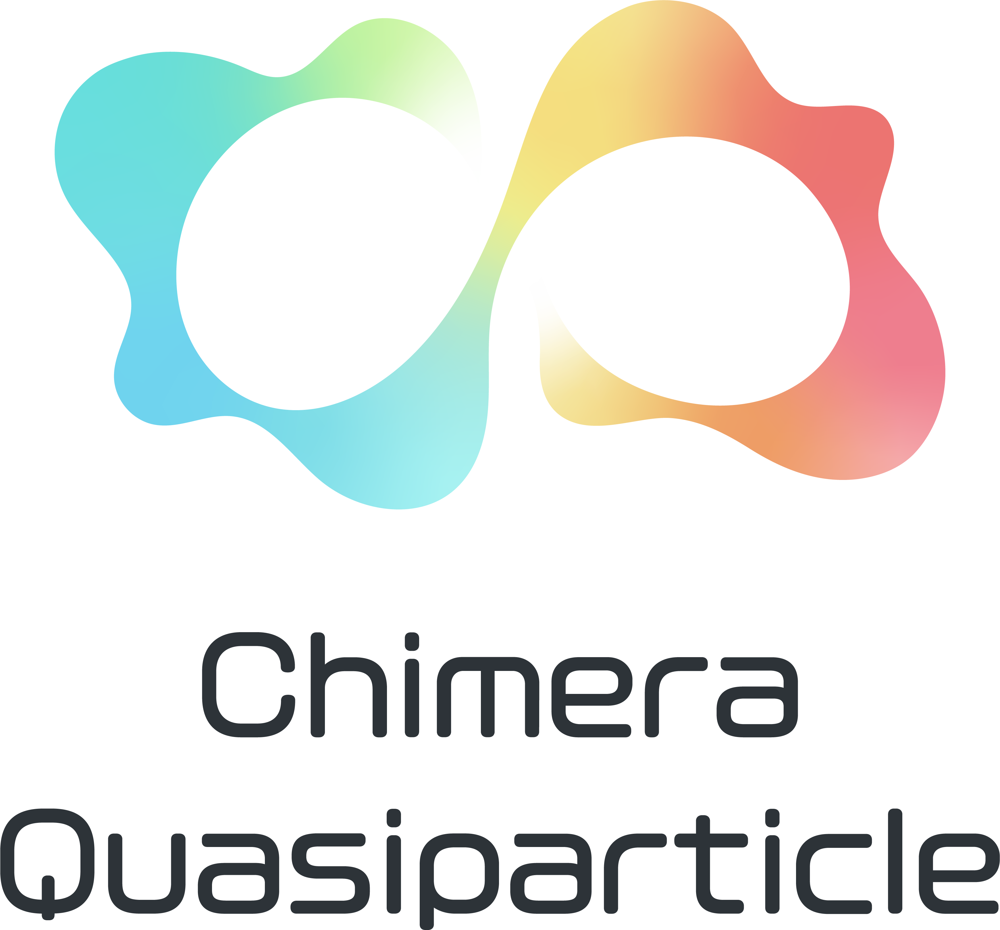
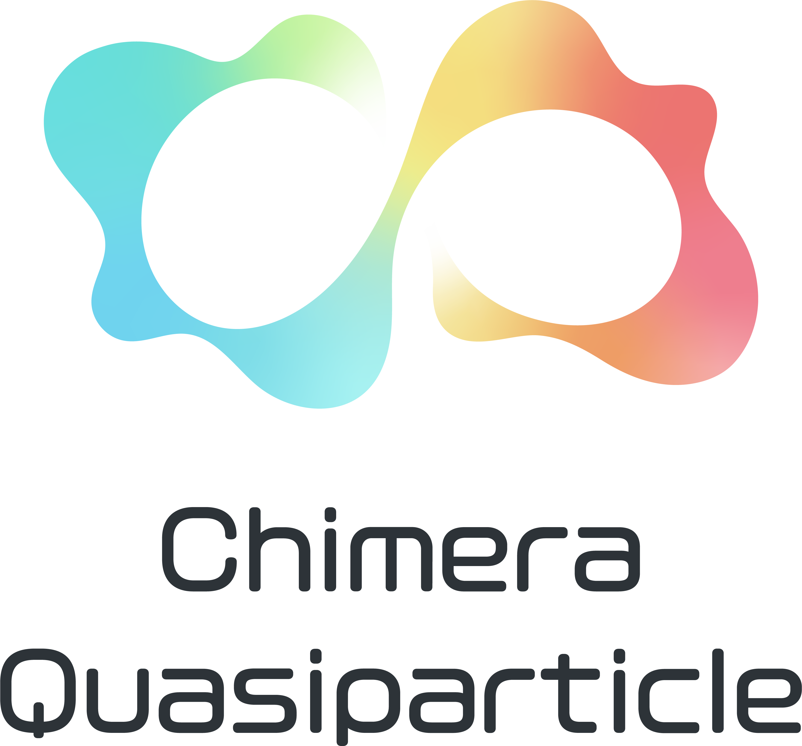

About this school
Iwate Spintronics School aims at discussing cutting-edge research topics, providing a chance for young doctoral and post-doctoral researchers to present their work, and offering local students opportunities to interact with international leading researchers.
Orgnizers:
- Koichi Oyanagi
Iwate University - Ryuhei Kohno
Tohoku University - Ryo Iguchi
National Institute for Materials Science - Shunsuke Fukami
Tohoku University - Gerrit Bauer
Tohoku University/Kavli ITS
contact: iwate-spintronics-school-2026com
Event Details
Date:
Main session: March 3rd-6th, 2026
Location:
Hachimantai Mountain Hotel, Hachimantai City, Iwate, Japan
Access information, here
Registration (till 31st August):
Registration is now open! Please register using the form: Register from here
Important Notes:
- - Registration is planned to close at the end of August.
- - Applications will be reviewed.
- - Review results will be sent in early September.
Sponsors:
- JST-ASPIRE: JPMJAP2322 & JPMJAP2410
- JSPS Grant-in-Aid for Transformative Research Areas (A), "Chimera Quasiparticles"
- Faculty of Science and Engineering, Iwate Univseristy
- Center for Sustainable Materials and Interfacial Science (CSMIS), Iwate University

.png) 



Special Lectures:
- Spintronics Hideo Ohno
Tohoku University - Sociology Nao Yoshizawa
Hokkaido University
Invited Speakers: (in alphabetical order)
International:
- Andrew Kent
New York University - Anna Delin
KTH Royal Institute of Technology - Helena Reichlova
Czech Academy of Sciences - Hyunsoo Yang
National University of Singapore - Igor Zutic
University at Buffalo - Jack C. Gartside
Imperial College London - Johan Åkerman
University of Gothenburg/Tohoku University - Joseph Barker
University of Leeds - Mathias Kläui
Johannes Gutenberg Universität Mainz - Stuart Parkin
Max Planck Institute of Microstructure Physics/
Martin Luther University Halle-Wittenberg - Tomáš Jungwirth
Czech Academy of Sciences/University of Nottingham - Ulrich Nowak
University of Konstanz - Wolfgang Belzig
University of Konstanz - Zhiyong Qiu
Dalian University of Technology
Domestic:
- Eiji Saitoh
The Univeristy of Tokyo - Jun'ichi Ieda
Japan Atomic Energy Agency - Kei Yamamoto
Japan Atomic Energy Agency - Masaki Nakano
Shibaura Institute of Technology - Satoshi Tomita
Tohoku Univerisity - Shuichi Murakami
The Univeristy of Tokyo - Teruo Ono
Kyoto University - Yoshichika Otani
The University of Tokyo
Career Insights Talk:
- Yoji Kunihashi
NTT inc. Basic Research Laboratories